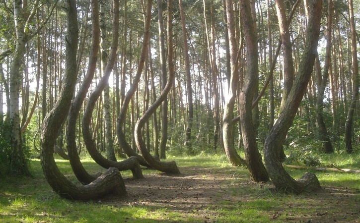
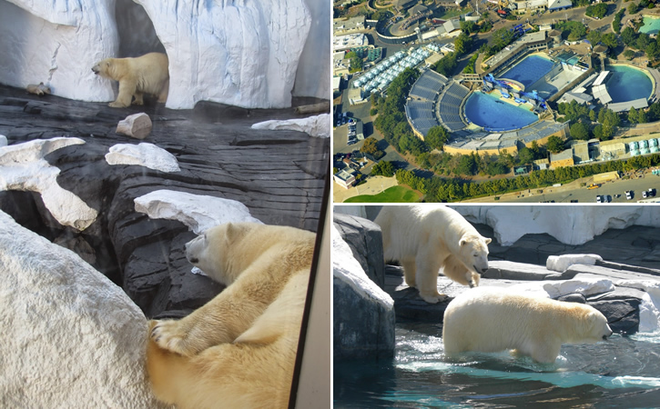

Principais Postagens

Conheça a Enigmática "Crooked Forest": Centenas de Árvores
em uma Floresta Foram Entortadas por "Forças Misteriosas", na Polônia?
09 de maio de 2021

O Mistério de Szenja: Uma Ursa Polar Morreu de "Coração Partido"
ao ser Separada de Sua Companheira no SeaWorld, nos Estados Unidos?
07 de maio de 2021
Últimas Postagens
09/05/2021
O Projeto Manhatan e a Construção das
Primeiras Bombas Atômicas
09/05/2021
A Misteriosa "Vulture Stone": Um "Pilar de
Pedra" Provocou um Verdadeiro Caos na
Terra Há 13 Mil Anos?
08/05/2021
O "Fantasma de um Homem" Subindo uma Escadaria
Apareceu em uma Mansão "Mal-Assombrada" do Século XVII, na
Inglaterra?
16/04/2021
Sereias: Lenda, Fotos, Vídeos, Relatos e
Análises. Será que elas existem?